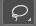
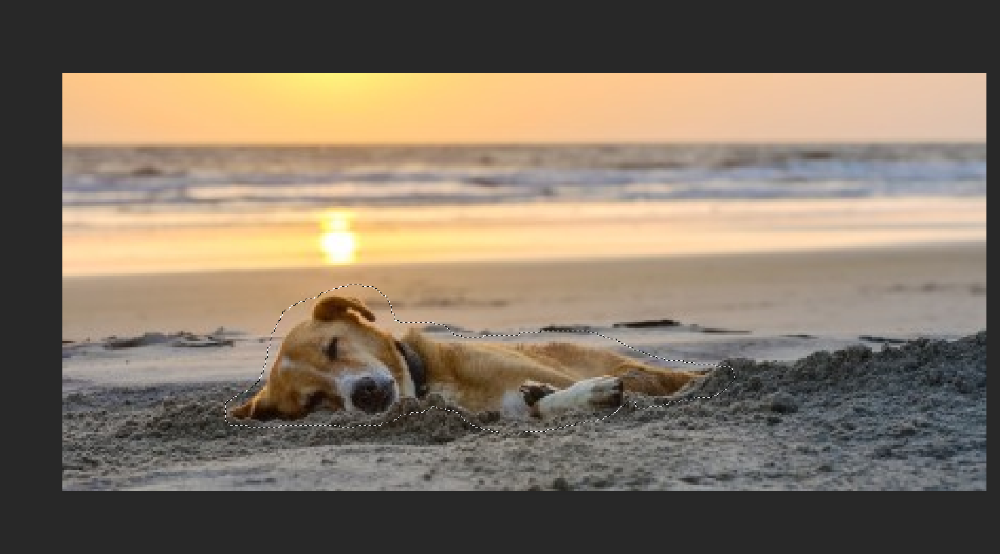
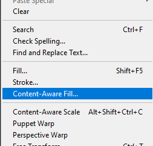
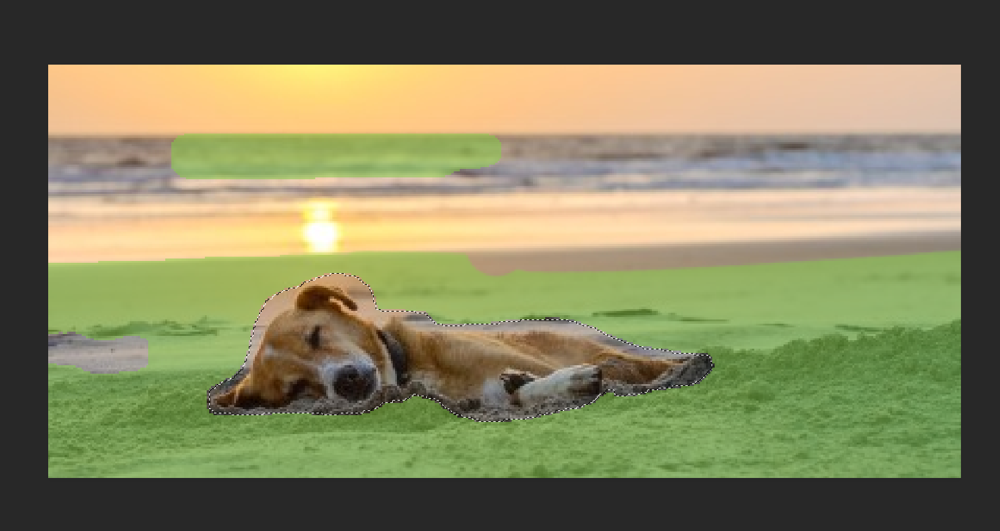

Inhaltsbasierte Füllung
Amateur class
Behandelte Themen: Inhaltsbasierte Füllung
Ausgangsbild
1. Lasso
Mache eine grobe Umrandung mit dem Lasso Tool  um den Hund herum

2. Inhaltsbasierte Füllung
Gehe dann zu Bearbeiten > Inhaltsbasierte Füllung

Es erscheint eine Auswahl von grünen Markierungen. Diese markierten Stellen sind die Daten, aus denen Photoshop versucht die vorhin ausgewählte Fläche neu zu befüllen.
Mit gedrückter ALT Taste kannst du die Auswahl wegradieren.

Drücke unten Rechts auf OK um abzuschließen.